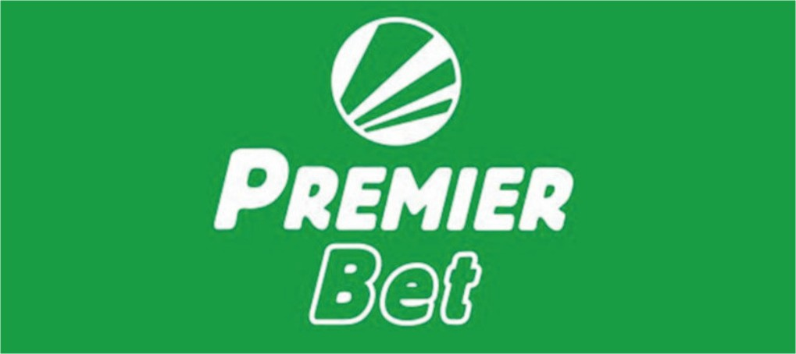

Win Virtual
Football With Ease
Predicting and winning virtual football is easier with Realnaps vfl prediction softwares. All you are expected to do is bet on the games that has been predicted to you.
Free predictions for your favourite betting website
- 

24/7 VIRTUAL FOOTBALL PREDICTION SOFTWARE
FREE TRIALAbout RealNaps Virtual Football Prediction Softwares
Realnaps virtual football prediction software make use of AI (Computer Artificial Intelligence) to intelligently predict bet of every virtual football match. The prediction software is frequently updated with the latest algorithms to help you win virtual football consistently. Predicting and winning virtual football is easier with the software. All you are expected to do is to bet on the games that has been predicted for you
Packages
- As a beginner, we welcome you to a world of profitable virtual football betting. We provide you with our free virtual football indicator. The vfl indicator is made to allow you test the strength of our virtual football predictions. Use For Free
REALNAPS FREE VIRTUAL FOOTBALL INDICATOR
- Realnaps premium Virtual football calculator gives you the ego of a prophet, with this software you can test and predict every game in a match week, it tells you which game to play and which to avoid. Subscribe To Use
REALNAPS VIRTUAL FOOTBALL CALCULATOR
- Get only the best predictions nothing less than the best,. The Realnaps premium indicator is our best Prediction Software. It has turned many to multi millionaires. Subscribe To Use
REALNAPS PREMIUM VIRTUAL FOOTBALL INDICATOR

Why you need the RealNaps Prediction software.
At the beginning of every season virtual football starts with easy to calculate and predict games but as the season progress, virtual football introduces more complex games that will taker longer time to effectively predict When you predict virtual football with your brain and limited calculative intelligence, you could be winning at the beginning of the season but after a while you will end up losing eveything you most won.
Predicting bets involes calculations. To predict the outcome of an event, you must first put certain conditions into consideration and calculate your odds. calculating the odds of an event is difficult without the help of a software. calculating odds is like calculating numbers, it is easier to calculate 1 +2 but as you procceed into more advanced numbers it becomes difficult, for example calculating 9,453 x 42,343 329 / 190 +1,345 could take hours. if you decide to use a calculator, it will take few seconds. The biggest problem with calculating by hand or brain, is not the amount of time wasted in calculation, the biggest problem is after calculating and spending hours you could end up making mistakes and getting the wrong answer s.
With a calculator you are 100% sure of getting the correct answer . A calculator will always be accurate and faster in making calculations. Realnaps virtual football calculator will always be more accurate and faster in predicting virtual football bets than any human brain. Just like you need a calculator for fast and accurate calculations, you need Realnaps to be successfull in virtual football. Realnaps virtual football Calculator use s a unique alogrithm to calculate and predict virtual football games, the calculator tells you the best and most rewarding option to bet. when it come s to virtual football, Realnaps Virtual Football premium prediction softwares are the only softwares you can trust for better accuracy and predictions.